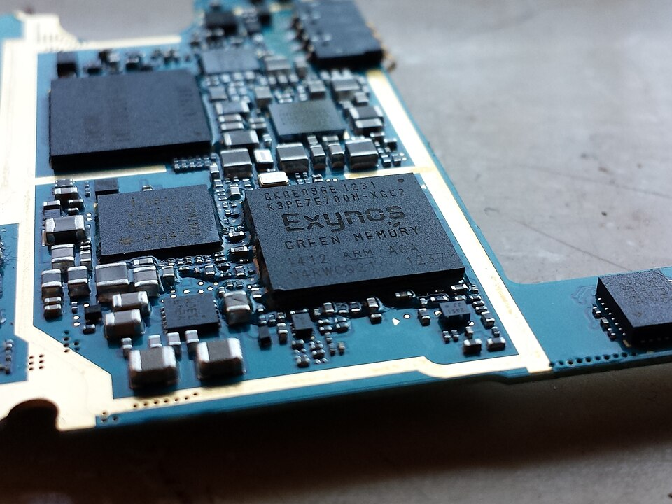
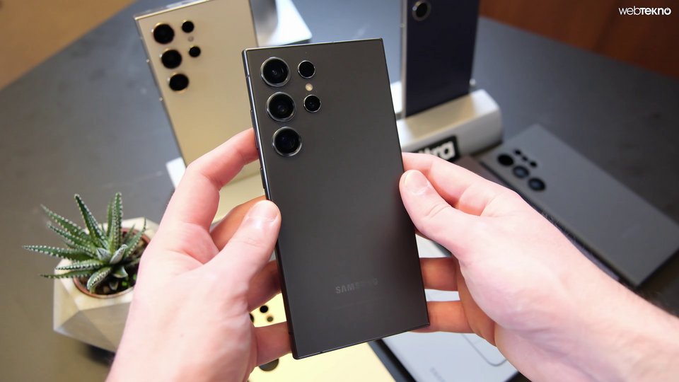
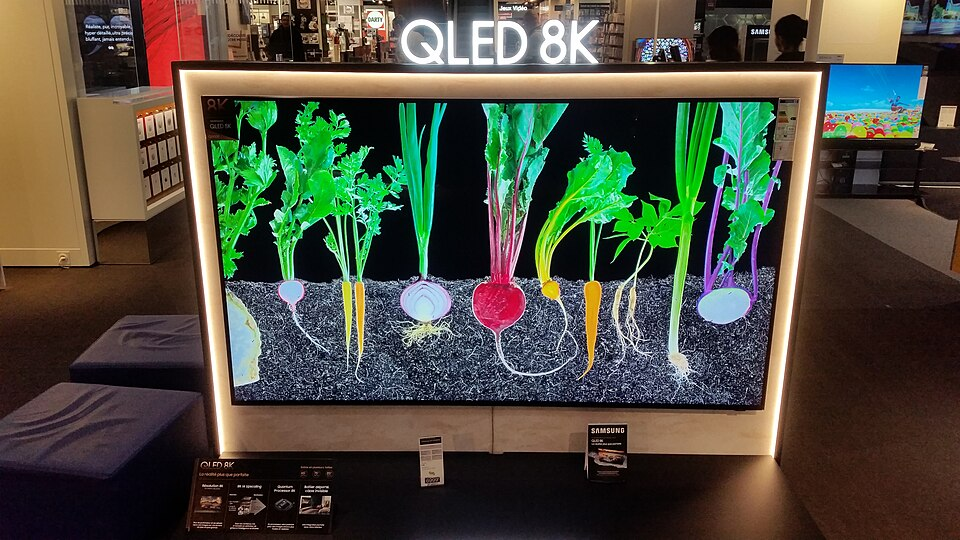

이 기업은? 컴퓨터와 스마트폰 속에서 정보를 기억하는 부품인 메모리 반도체를 세계에서 가장 많이 만드는 회사 중 하나예요. 갤럭시 스마트폰, TV, 냉장고·세탁기 같은 가전제품도 만들어 전 세계에 팔고 있어요. 사업은 크게 반도체를 맡는 쪽(DS)과 완제품을 맡는 쪽(DX) 두 부문으로 나뉘어요.
핵심 정보 대표
대표이사 전영현 부회장(반도체) · 노태문 사장(완제품)그룹 회장 이재용 (삼성그룹)
직원 수
약 12만 9천 명 (국내, 2025년 말)
무엇을 하는 기업인가요? 칸에 마우스를 올리거나 누르면 자세한 설명을 볼 수 있어요.
메모리 반도체 D램, 낸드플래시처럼 데이터를 저장하는 칩 자세히 보기 메모리 반도체 데이터를 저장하는 칩이에요. 잠깐 기억하는 D램과 전원이 꺼져도 남는 낸드플래시가 있고, 요즘은 AI 서버에 들어가는 고성능 메모리(HBM)가 가장 빠르게 커요. 삼성전자는 수십 년 동안 메모리 세계 1위 자리를 지켜 왔어요.
대표 예 D램, HBM, 낸드플래시, SSD
시스템 반도체·파운드리 스마트폰 두뇌 칩 설계와 다른 회사 칩 위탁 생산 자세히 보기 
사진: Köf3 · CC BY-SA 3.0 · 위키미디어 커먼즈 시스템 반도체·파운드리 스마트폰의 두뇌 역할을 하는 칩(엑시노스)과 카메라 센서를 설계하고, 다른 회사가 설계한 칩을 대신 만들어 주는 '파운드리' 사업을 해요. 파운드리에서는 대만 TSMC와 경쟁하고 있어요.
대표 예 엑시노스, 이미지센서, 파운드리(위탁생산)
스마트폰 갤럭시 시리즈 스마트폰·태블릿·웨어러블 자세히 보기 
사진: webtekno · CC BY 3.0 · 위키미디어 커먼즈 스마트폰 갤럭시 스마트폰과 태블릿, 스마트워치, 무선 이어폰을 만들어요. 애플과 함께 세계 스마트폰 시장을 이끄는 회사이고, 접는 스마트폰(폴더블)을 처음 대중화했어요.
대표 예 갤럭시 S·Z 폴드·Z 플립, 갤럭시 탭·워치·버즈
TV·생활가전 TV, 모니터, 냉장고, 세탁기, 에어컨 자세히 보기 
사진: Bretwa · CC BY-SA 4.0 · 위키미디어 커먼즈 TV·생활가전 TV는 2006년부터 세계 판매 1위를 지키고 있어요. 냉장고, 세탁기, 에어컨 같은 생활가전과 모니터도 만들고, 자회사 하만을 통해 자동차용 전자장비와 오디오도 팔아요.
대표 예 QLED·OLED TV, 비스포크 가전, 하만 오디오
어디서 돈을 버나요? 스마트폰·네트워크 (MX) 35.7%
메모리 반도체 28.7%
TV·생활가전 (VD/DA) 15.8%
디스플레이 (삼성디스플레이) 8.2%
시스템 반도체·파운드리 7.2%
전장·오디오 (하만) 4.4%
2025년 연간 부문별 매출 기준이에요(부문끼리 사고판 금액이 포함된 회사 발표 기준으로 계산). 반도체 호황으로 2026년 3분기에는 반도체(DS) 비중이 약 70%까지 커졌어요.
걸어온 길 1969 삼성전자공업으로 설립, 흑백 TV 등 가전부터 시작
1974 한국반도체를 인수하며 반도체 사업 첫발
1983 64K D램 개발로 메모리 반도체 본격 진출
1992 D램 세계 시장 점유율 1위
2006 TV 세계 판매 1위 (이후 계속 1위)
2010 첫 갤럭시 S 출시
2012 스마트폰 판매량 세계 1위
2017 미국 전장·오디오 회사 하만 인수
2022 세계 최초로 3나노 공정 반도체 양산
2026 AI 메모리 호황으로 3분기 영업이익 100조 원 돌파
출처: 실적 Open DART 자동 수집, 삼성전자 연결 실적 발표·경영설명회 자료(2021~2026년 3분기, 2026년 분기 수치는 감사 전 기준), 삼성전자 지속가능경영보고서 2025, 2026년 사장단 인사 보도 · 마지막 업데이트: 2026년 11월 28일